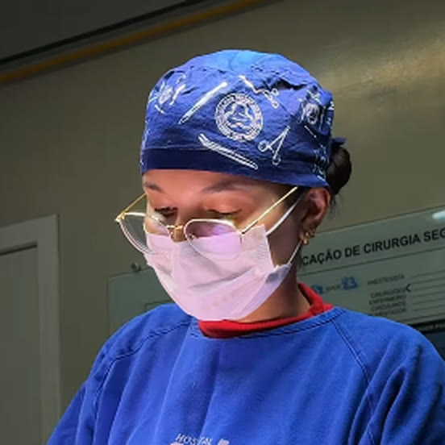

Hospital AMI
Gastrocentro
Agendar · (74) 99918-3499Cirurgia Geral e DigestivaIrecê · BA
Cirurgia minimamente invasiva e oncologia cirúrgica digestiva, em Irecê.
Da primeira consulta ao pós-operatório, com WhatsApp próprio para quem operou.
Áreas de atendimento
Minimamente invasiva
Procedimentos por pequenas incisões, como a videolaparoscopia, quando indicados para o seu caso.
Conhecer a área →Hérnias
Hérnia abdominal, lombar e outras.
Conhecer a área →Vesícula
Cálculos e colecistectomia, com CPRE em equipe.
Conhecer a área →Oncologia
Cirurgia nos tumores do aparelho digestivo, com acompanhamento em equipe.
Conhecer a área →A indicação de qualquer cirurgia é sempre individual, definida em consulta. Como funciona o caminho até a cirurgia ↗
Perguntas do dia a dia
O primeiro passo é uma consulta para entender o seu caso, os exames e as alternativas. A decisão é tomada com você.
Antes da cirurgiaNem toda hérnia exige cirurgia imediata. A avaliação mostra o tipo, o tamanho e o melhor momento.
HérniasPele ou olhos amarelados merecem avaliação médica rápida. A causa pode estar nas vias biliares.
Vesícula e vias biliaresComo funciona
Sua história, seus exames e suas dúvidas.
Exames, alternativas e o momento certo, decididos com você.
Acompanhamento depois da cirurgia, com WhatsApp próprio para o pós-operatório.

A médica
Geisa Batista de Souza Bastos é cirurgiã geral e do aparelho digestivo, com atendimento em Irecê.
Nas palavras dela
“Você merece cuidado personalizado.”
Dra. Geisa Bastos · página de links ↗
Onde atendo
Gastrocentro
Agendar · (74) 99918-3499Agendamento pelo WhatsApp
Agendar · (74) 99966-9399Agendamento pelo WhatsApp
Agendar · (74) 99971-6652O pós-operatório tem um WhatsApp próprio.
Dúvidas frequentes
Não existe resposta única. A indicação depende da avaliação individual, feita em consulta.
No Hospital AMI, no CMU ou na COP Especialidades, em Irecê. Escolha o que for mais prático para você.
Não. É somente uma preferência. A equipe confirma manualmente a disponibilidade e o agendamento.
Vamos combinar
Escolha uma preferência. A equipe confirma manualmente a disponibilidade e o agendamento. Isto não é uma reserva nem uma consulta à agenda.
Contato
Hospital AMI · CMU · COP · Irecê-BA